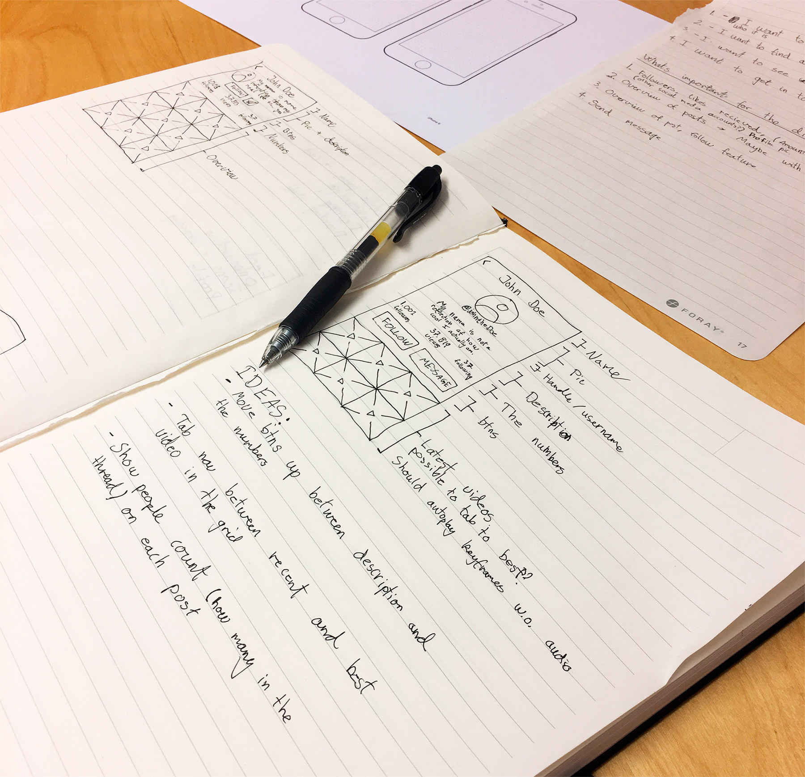
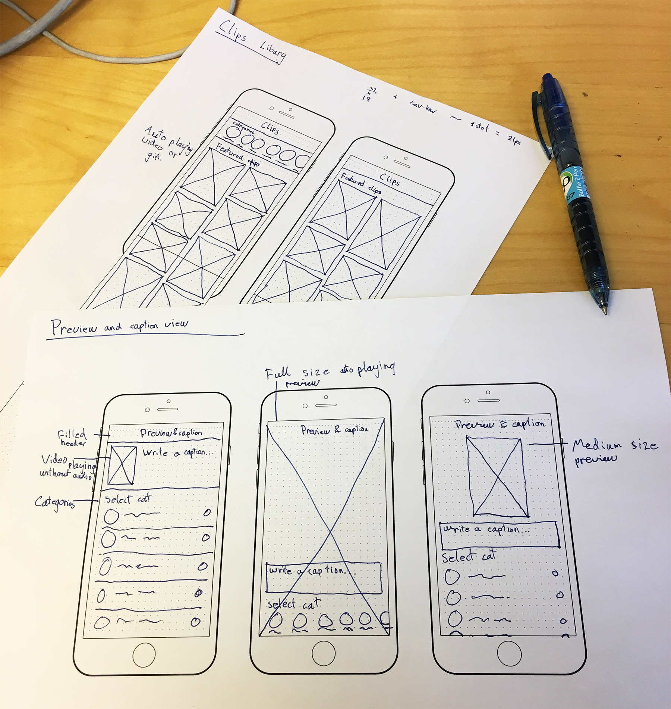
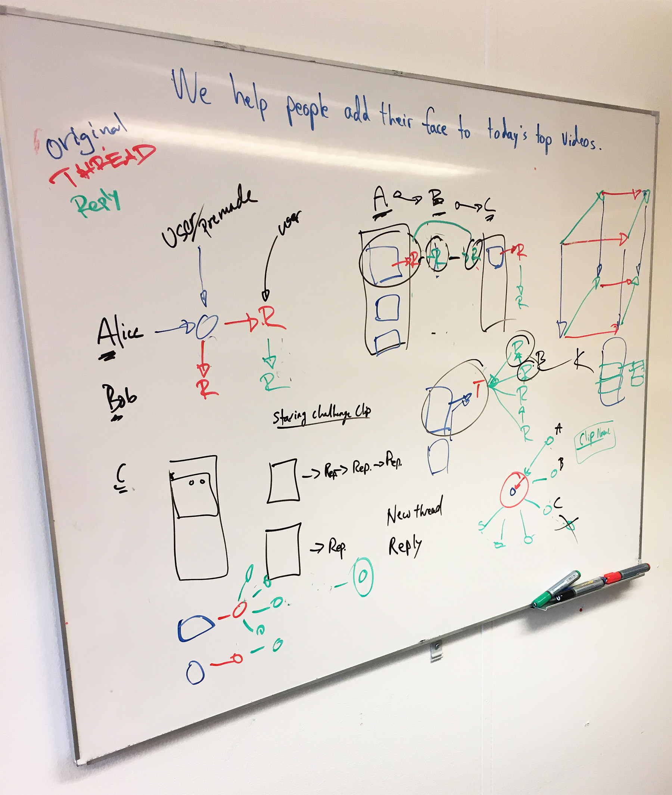
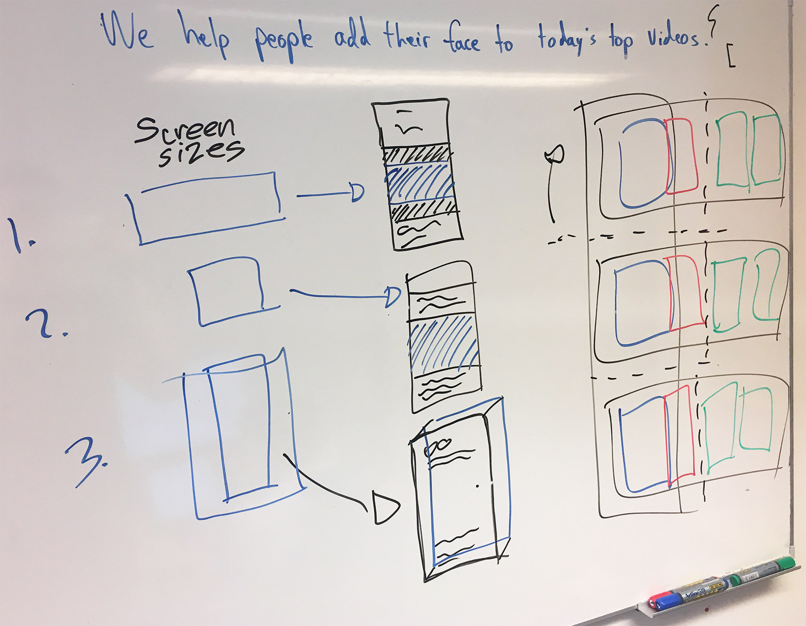
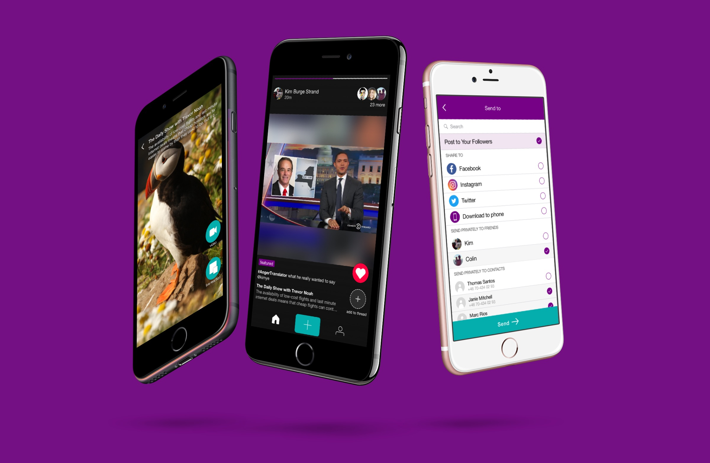

Intro
I'm working at the startup Nordic Beta Labs where we are a small team of 3 (the two founders, Colin Treseler and Kim Burge Strand and me) trying to make awesome apps. The philosophy around the company is we do not know what is working, so we have to keep testing. Trial and error until something works. We are currently working on the companies 3rd and by far biggest bet so far, a new take on video.
Challenges with evolving ideas
This is by far the most dynamic and fast paced environment I have worked in and it brings some challenges. It forces you to learn that you are not your ideas. Since the product we are working on keeps evolving, it also means that you might spend weeks on some design that turn out to be irrelevant in the end. But it’s all part of the process to arrive at the final product, so it’s not something that could be skipped.
Since this project, is a lot of jumping back and forth in the process, I am going to talk about different elements of the journey — not one thing, more the overall tools, and processes we are using.
Figuring out the need
One thing we work a lot with is figuring out the need for our users. That could be the bigger need for the whole app or a need for a specific feature we are working on. The jobs-to-be-done framework by Clay Christensen helps us do this in a good and very down to earth way. It makes you take a step back and really think: What is the job (aka problem) we are solving right now?
Wireframes and user flows
To quickly test out different ideas I am using wireframes. It can be completely free hand to get a feeling of how different element should be placed, or if I want to test a bit more specific with sizes I print iPhone templates with dots on them, so I know the actual size in pixels.
Wireframes for possible profile pages
Wireframes for different possible clip libraries
We also work with drawing the flows to better talk about how the app is going to work, and why we are picking the route we are, compared to other alternatives. This often includes a whiteboard and some really interesting discussions about both design, development and concept.
A snapshot of a discussion about how the video comments should work + a technical challenge with the videos
A discussion about the feed and how it will work, with different video sizes (landscape, rectangle and vertical)
Visual design
After testing different ideas on paper, I move on to the next step: Visual design. Here it’s important to give the whole app the same visual expression so everything feels inline with each other.
A view different screens from the app
Prototyping and testing
It is very important to always keep that in mind and try out how the real version would feel. Therefore I use Principle to test how different flows and different part of the app works in an interactive prototype.
Video comments
Reaction to a clip
Early version of the clip library. The icons are placeholders from musical.ly
The prototypes also work well for user testing. We have been testing small areas of the app with people from our shared office space and students.
Learnings
I’ve learned a lot about thinking through the product all the way from a to z. There is a lot of things to consider and every step of the process is important. I have improved in my ability to:
- Use different tools and methods to figure out the user needs
- Use wireframes to a better product faster
- Use prototypes to understand the flow and the feeling of the app
- Work closely with engineers and be aware of the technical constraints in a project
Moving forward, I’d like to test our app on more people in our target group, get feedback, and iterate on that feedback. It’s pretty awesome to imagine this being used by thousands of people, so I am looking very much forward to the day we launch it!